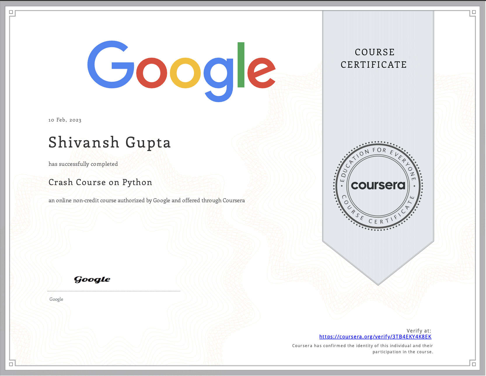
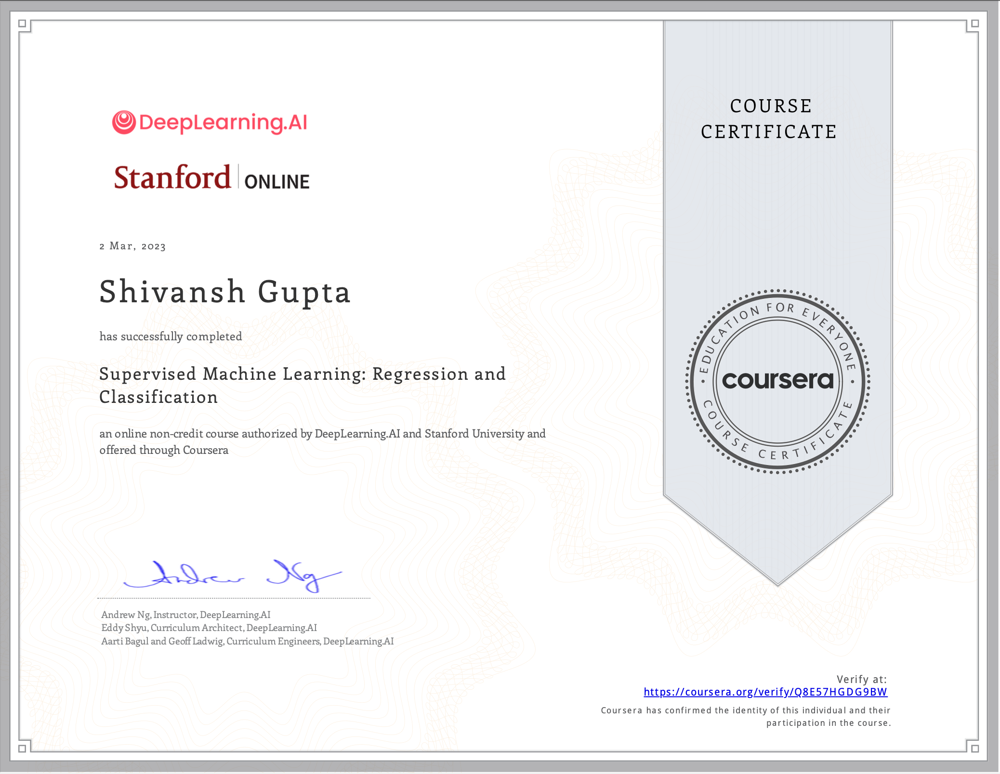
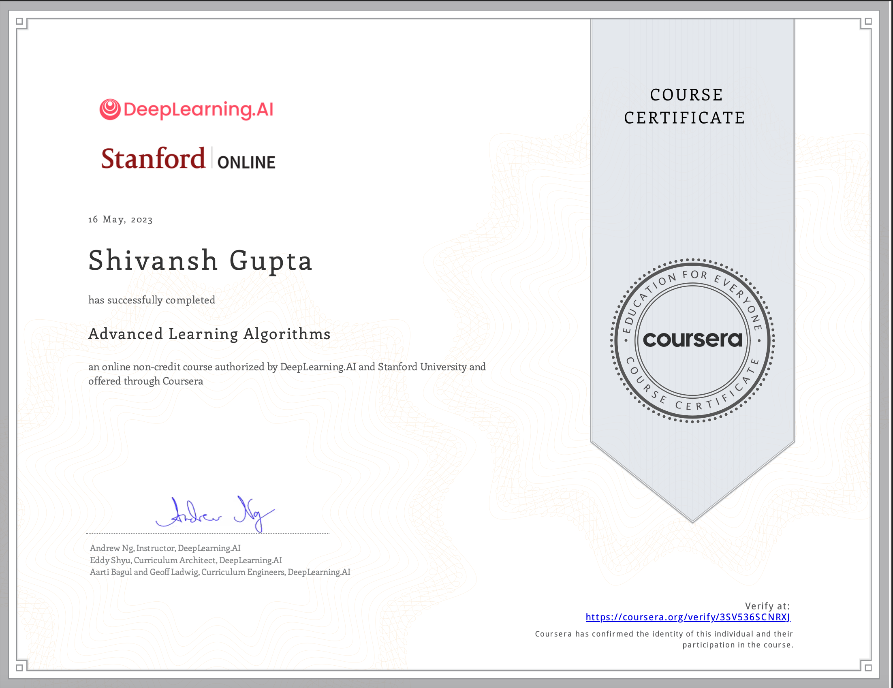

I am a passionate undergraduate student with a strong interest in artificial intelligence and machine learning. I am currently pursuing a degree in Computer Science at VIT, Vellore.
I have immense interest in machine learning, natural language processing, computer vision, data science, and more. I am looking for research internships and career opportunities
in the field of AI/ML to get hands on practical experience in the field. I am eager to learn and contribute to the field.
  